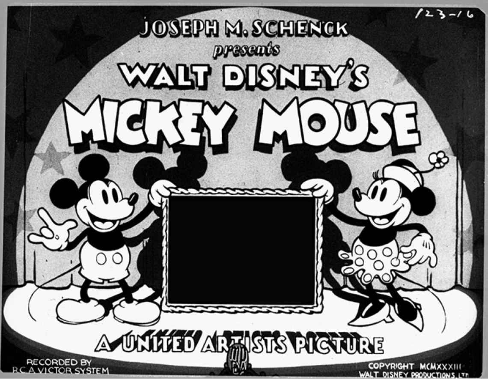

История появления
Микки Мауса

История персонажа
Нет такого человека на свете, который не знает, кто такой Микки
Маус, ведь этот причудливый мышонок не только появляется в
мультипликационных фильмах компании «Дисней», но и является
символом американской культуры вообще – наравне с Суперменом,
«кока-колой» и клоуном Рональдом Макдональдом.
Этот вымышленный персонаж, дебютировавший в 1928 году, успел
перекочевать в видеоигры и кино, а также стал крупным
маркетинговым ходом: даже на детской одежде встречаются принты с
подмигивающим Микки Маусом и его девушкой Минни.
История создания
История создания этого персонажа многогранна, ибо появление антропоморфного мышонка совпало с рядом технологических новшеств в плане кинематографа. Первоначально на экранах блистал и приносил радость маленьким зрителям кролик Освальд, который внешне отличается от Микки Мауса лишь наличием длинных ушей. Этот персонаж был создан в 1927 году иллюстратором Абом Айверксом и в мгновение ока стал известным мультипликационным героем.
Ленты о длинноухом любителе приключений создавались компанией «Дисней», а вот в качестве официального распространителя выступала киностудия «Universal Pictures», которой удалось переманить к себе часть аниматоров. Кроме того, из-за контракта, подписанного в спешке, права на Освальда принадлежали не «Диснею», а «Universal Pictures». Поэтому Уолт Дисней, понимающий, что киностудия может отказаться от его услуг, решил создать нового персонажа с нуля.
Уолт Дисней вместе с немногочисленными преданными сотрудниками втайне начал придумывать причудливого мышонка, пока другая команда художников, уже работающая на нового начальника, занималась рисовкой кролика Освальда. Данная ситуация сыграла расстроенному Уолту на руку, потому что он стал более тщательно относиться к соблюдению авторских прав и подписанию контрактов.
Не сказать, что главного диснеевского героя иллюстраторы придумали сразу же. Художник Айверкс признавался, что выбор стоял между лягушкой, котенком и щенком, однако все эти задумки были уничтожены Уолтом на корню. Но однажды владелец мультипликационной студии счел привлекательным персонажем мышонка, хотя с этими грызунами у него были связаны не самые приятные воспоминания: в начала двадцатых Уолт работал в студии «Laugh-O-Gram», которая была буквально населена мышами.
Новый персонаж появился на экранах 18 ноября 1928 года в мультипликационном фильме «Пароходик Вилли», который транслировался в нью-йоркском кинотеатре. Примечательно, что первоначально героя детских мультиков назвали Мортимером, но супруга Диснея забраковала это имя, предложив назвать персонажа более благозвучным прозвищем – Микки Маус.
Первоначально Микки Маус, засветившийся в мультфильме «Plane Crazy» 15 мая 1928 года, не получил успеха у зрителей, потому что напоминал других диснеевских персонажей, которые изрядно поднадоели зрителям. Тогда Уолт задумался над тем, чтобы найти дистрибьютора, и, вопреки всему, взялся за производство третьего мультфильма. Уолт понял, что новому герою нужна отличительная черта, выделяющая его на фоне других персонажей. Добившись этого, Дисней стал свидетелем, как Микки Маус завоевал лавры почета и любовь аудитории.
Когда Микки Маус был придуман Уолтом Диснеем, доподлинно неизвестно, но его официальным днем рождения принято считать 18 ноября 1928 года, день его дебюта на киноэкранах. Любимец маленьких детей начал появляться в белых перчатках только в 1929 году, в картине «The Opry House»: делалось это для того, чтобы руки мышонка контрастировали с его телом, ведь первые мультфильмы о Микки Маусе были черно-белыми. Этот аксессуар с тремя черными линиями на тыльной стороне (такие складки были на детских перчатках) стал индивидуальной чертой персонажа.
За время своего существования хвостатый герой в красных штанишках умудрился перевоплотиться в различные образы, а также обзавестись преданными друзьями: Гуффи, Дональдом Даком и Плуто. Несмотря на то, что в некоторых сериях мышонок ухаживает за своей подругой Минни, Уолт Дисней говаривал, что эти персонажи были женаты еще до появления мультфильма. Хотя иногда они ведут себя так, как будто впервые познакомились.
Но иллюстратор противоречил сам себе, потому что в ленте «The Barn Dance», которая вышла 14 марта 1929 года, Маус страдает от неразделенной любви, так как Минни предпочитает ему Черного Пита. Зрители увидели в этой картине попытку Уолта разжалобить поклонников мультяшного героя. Помимо прочего персонаж примерил солдатское обмундирование в картине «The Barnyard Battle», где он сражался против котов, а также побывал в Африке в роли туриста.
- Мультфильм “Концерт” - Мультфильм “Концерт” - Мультфи
Первый цветной мультфильм о Микки Маусе под названием «”Концерт”» вышел в 1935 году и занял место в списке пятидесяти величайших мультфильмов. Картина, выполненная в технике «”техниколор”», рассказывает о мышонке, который дирижирует оркестром. Но Дональд Дак, продавец мороженого, громко агитирует прохожих купить лакомство, тем самым мешая Микки Маусу сосредоточиться.
Всего насчитывается 21 короткометражный фильм с участием Микки Мауса. Сам мышонок менялся со временем. Также этот герой «снимался» в сериалах, например, в «Клубе Микки Мауса», «Мышином доме» и других многосерийных мультфильмах.
- Фильм “Фантазия” - - Фильм “Фантазия” - Фильм “Фант
Уолт Дисней даже перенес миловидного любителя путешествий в полный метр. В 1940 году вышел фильм «”Фантазия”», который стал самой смелой задумкой Диснея: в ленте был использован новый стереозвук «фантасаунд», а сюжет, где главный герой выступал в образе ученика волшебника, напоминал абстракцию и авангард.
- Фильм “Кто подставил кролика Роджера” - Фильм “Кто п
В 1988 году компании «”Touchstone Pictures”» и «Amblin Entertainment» выпустили фильм «”Кто подставил кролика Роджера”» – коллаборацию мультипликационных персонажей и реальных актеров. В этом кинематографическом произведении, которое получило премию «”Оскар”», впервые встретились на «”одной съемочной площадке”» Микки Маус и другой культовый персонаж – Багз Банни, звезда студии «” Warner Brothers”».
Откуда такая популярность?
Популярность Микки Мауса вызвана интересными сюжетами: поклонники наблюдают, как главный герой едет на рыбалку, едет на поезде или отправляется в неизведанную страну. Но его известность также обусловлена коммерческим ходом компании «Дисней.
Дело в том, что боссы мультипликации решили задействовать маркетинговый ход: компания выпускала и раскручивала товары с изображением мышонка. Рой Дисней стал создателем серии наручных часов, где на циферблате красуется Микки Маус. Сегодня такой аксессуар стоит на аукционах немалых денег.
Также «Дисней» пользуются методом «скрытого Микки», представляющего собой искусно спрятанный символ Мауса – три круга, напоминающие голову мышонка. Персонаж косвенно встречается в культовых лентах компании: «Русалочке», «Питере Пэне», «Короле Льве», детских парках, Диснейленде и так далее. Причем символ заметит только самый внимательный любитель мультфильмов: в «Белоснежке» его образуют мыльные пузыри, а в «Спасателях» на стене висят часы с изображением героя.
© 2021 История анимации